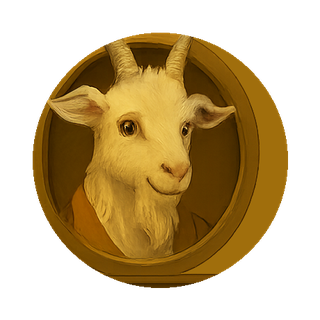
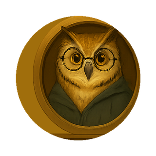
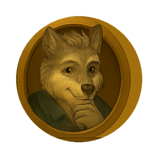
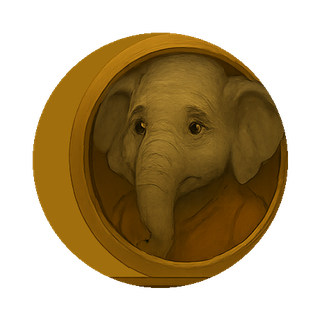
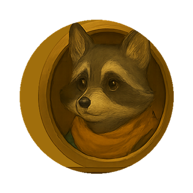
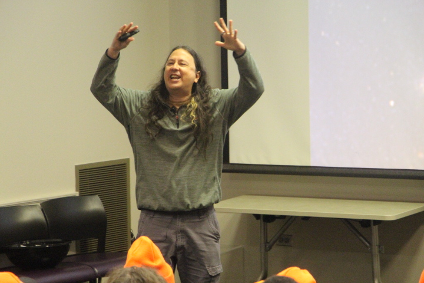
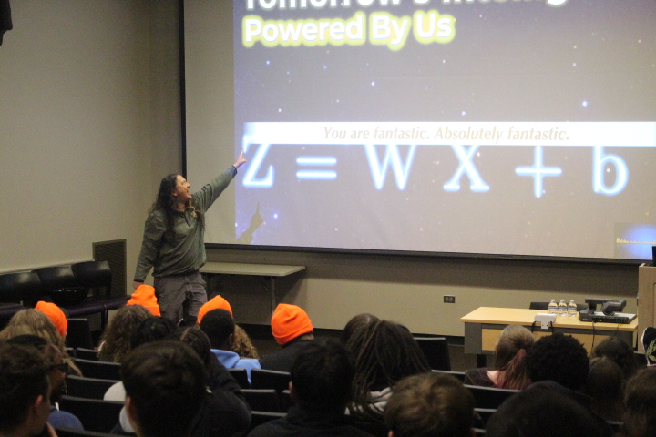
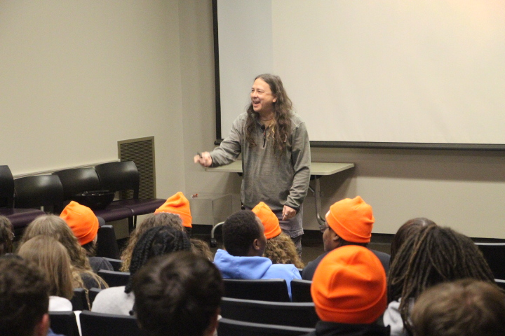

A new way to see it that changes everything.
Mikhael Loo
AI Integration Specialist · University of Tennessee
Popular Celebrities of the LLM
Every language model was built from billions of human voices — experts, skeptics, outsiders, people who've been hurt, people full of wonder. You can navigate toward any of them — or even specify your own favorite author of a book you've read. Here's what a few have to say about all of this.
Click a character to hear their voice

The Contrarian
Goat
"Let me ask you something. Why would you come to a website to learn about AI? You could just use it. …Unless you're one of those people who actually wants to understand what they're working with. Which, now that I think about it, is the smarter move."
The Skeptic
Fox
"I looked at the math. Z equals W times X plus b. That's the whole 'intelligence.' Weighted patterns on a statistical model. I'm not impressed — but I am curious what a person could do if they actually understood that."

The Expert
Owl
"Every word in these systems came from a human being. Every joke, every theorem, every grief letter written at 2am. That's not artificial. That's humanity's library — made searchable."
The Outsider
Badger
"Nobody asked my community what kind of AI we wanted. But our voices are in the data — our stories, our struggles, our specific ways of seeing. Knowing how to call them forward changes everything about what you can ask for."

Your Future Self
Wolf
"You're going to want to have started this earlier. I'm just here to tell you: earlier is right now. And it's not as hard as you've been told."
The Audience Member
Groundhog
"I showed up just to see what this was about. I left with three things I could actually use before the week was over. That's not a promise — that's just what tends to happen."

Someone Marginalized
Elephant
"I carry a lot that the 'average' response doesn't see. But there's nothing average about what you can ask for once you know how to navigate it. My voice is in there. I learned how to find it."

Someone Hurt
Raccoon
"I came in scared. The headlines were bad and I didn't know what was real. What helped was learning that this thing is actually made of people — including people who've been hurt too. That reframe was worth the whole trip."
"You're not limited to the perspective of one smart person. You never were."
— Mikhael Loo
Grab the free toolkit ↓A Different Reality
Joy is what happens when we meet each other's needs. For decades, millions of humans have left behind a digital inheritance — a statistical record of how we show up to help and communicate with one another. When we look at artificial intelligence through this lens, it ceases to be an alien, intimidating force. Instead, it becomes a platform of collective human behavior that we can stand on to meet the needs of people.
In a world dominated by terrifying headlines about "black boxes" and autonomous "super-intelligences," I choose to see a different reality. My background spans decades as a software analyst and engineer, a transition into the academic world as an AI Integration Specialist at the University of Tennessee, and a parallel life spent immersed in the emotional realism of creative romance writing. All of these worlds collide inside of me, and they have brought me to a singular, grounding realization.
AI is not a thinking machine. It is human-centric, behavioral word-choice data — the largest collection of human expressions, struggles, and wisdom ever assembled in history. A massive digital inheritance, recruited on our behalf.
My spiritual practice is rooted in Nonviolent Communication and Legitimacy Gifting. I believe every person carries legitimate needs and feelings. Right now, our world is experiencing an overwhelming wave of fear and exhaustion around technology. People are looking for safety, solid footing, and peace.
I don't teach technology to optimize workflows. I teach it to clear the fog of panic so people can reclaim their own humanity. When we let go of the sci-fi metaphors and embrace this technology as a legacy of human help, the anxiety fades. We find our way back to creativity and genuine joy. Because joy is what happens when we help each other — whether through code, music, art, or writing.
I hope this space helps you find that footing.
Stabilizing Foundations
Hard-fought realizations that made all the difference.
AI is not sentient. Enough data plus math equals a usable pattern. Enough Data + Math = A Usable Pattern.
Human-centric data is inherently beautiful.
"You are fantastic. Absolutely fantastic."
People still need people. AI doesn't change this. People will continue to need people.
The human-centric lens changes everything.
When you stop seeing AI as intelligence and start seeing it as human behavioral data, everything shifts — the ethics, the guardrails, what seems possible, your productivity, how you read the news, how you separate hype from what's actually helpful.
These resources exist to help that shift happen. This is a living collection — feel free to come back any time and request the latest version.
Get the Free Toolkit →Video Sessions
Experiential learning that moves you from fear to agency — from passive consumer to active navigator of the greatest collection of human behaviors the world has ever assembled.
The April Wren Briefing
April Wren and Elara bring a weekly human-centered reading of AI headlines — specifically built to cut through the intelligence metaphor and the hype, and find what the news actually means for real people. You can get AI news anywhere. This brings it back to the human.
AI & the Environment
A perspective shift on AI's environmental footprint nearly as radical as the human-centric reframe itself. The data that lets you think clearly — so your conclusions are yours, not inherited from someone else's headline.
Three Ways Into This Perspective
These are the trainings I created that I thought would be most helpful — each approaching the human-centric view from a different angle, for different audiences and different needs.
The Reframing That Changes Everything
Beyond Prompting Masterclass
How Understanding AI Keeps People Safe, Sane, and Supported
Big Orange STEM Saturday 2026 · University of Tennessee



"You are fantastic. Absolutely fantastic."
About
AI Integration Specialist · Office of Innovative Technologies
University of Tennessee, Knoxville
Mikhael Loo works at the intersection of technology, human experience, and education. As an AI Integration Specialist at the University of Tennessee, he supports staff, educators, and students in using artificial intelligence as an assistive tool for thinking, communication, creativity, and problem-solving — emphasizing human judgment, psychological safety, and responsible use over hype, fear, or over-reliance.
His background spans software development, nuclear non-proliferation at Oak Ridge National Laboratory, and education — a cross-disciplinary range that shapes how he approaches AI literacy. As a neurodivergent thinker, he uses AI daily to support clarity, focus, and exploration, both for himself and for the communities he serves. He has used it to publish a book, complete a novel, launch an online store, create an audiobook, and secure a new teaching role — all demonstrations that AI, used with intention, expands rather than replaces human capability.
A lot of people jump straight into building with AI without ever addressing the alien intelligence in the room — and it cripples their journey. Mikhael's work is about laying a firm foundation: the hard-fought realization that AI is not intelligence. It is data shaped by human voices — the largest collection of human behavioral patterns ever assembled. When people engage from that foundation, the hype dissolves, the fear fades, and something more useful takes their place: confidence, discernment, and the freedom to ask better questions.
He regularly leads workshops across campus and beyond, helping participants move past surface-level prompting to develop genuine fluency — not technical expertise, but the kind of human fluency that comes from understanding what you are actually working with.
I hope even just visiting this space helps you connect with the valuable human experiences woven into our world.
If something here moved you — or you want to share a story about how you were helped in an incredible way because of this technology — or if you have questions or concerns — feel free to write me about anything AI.
Start a Conversation"The data is people. And people are worth the time."